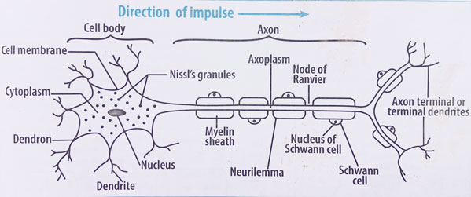

A typical motor neuron consists of three main parts:

Diagram of a motor neuron
A motor neuron has dendrites, a cell body, and an axon, and may be myelinated to speed transmission. Sensory neurons, motor neurons, and relay neurons differ in cell body placement and the direction in which they carry impulses.
1. With the aid of a labelled diagram, describe the structure of a motor neuron.
2. What is the function of dendrites, cell body, and axon in a motor neuron?
3. What is the role of the myelin sheath in a motor neuron?
4. Differentiate between myelinated and non-myelinated neurons.